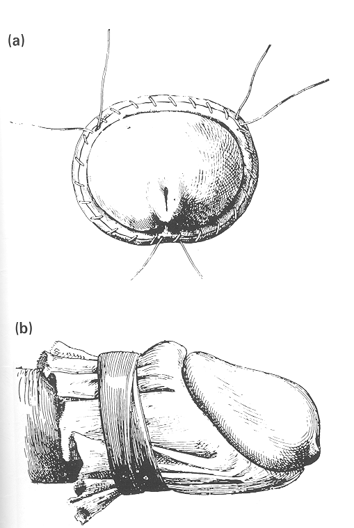
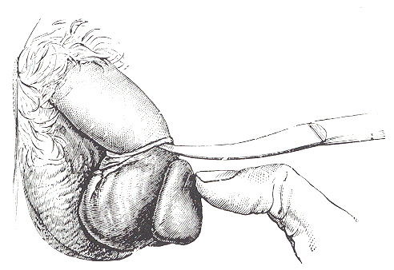

The history of circumcision
W.D. DUNSMUIR and E.M. GORDON
Department of Urology, St
George's Hospital NHS Trust, Tooting, London, UK
Introduction
Despite an estimated one-sixth of the
world's men having been circumcised [1,2],
it has long been forgotten where or why this most intriguing
operation began. The procedure has been performed for
religious, cultural and medical reasons, although the last
has only become fashionable since the rise of modern surgery
in the 19th century. Accordingly, the indications for surgery
have surfaced, submerged and altered with the trends of the
day. In this review we explore the origins of circumcision,
and discuss the techniques and controversies that have
evolved since the event has become `medicalized'.
The origins
Anthropologists do not agree on the origins
of circumcision. The English egyptologist, Sir Graham Elliot
Smith, suggested that it is one of the features of a
`heliolithic' culture which, over some 15 000 years ago,
spread over much of the world. Others believe that it may
have originated independently within several different
cultures; certainly, many of the natives that Columbus found
inhabiting the `New World' were circumcised. However, it is
known that circumcision had been practised in the Near East,
patchily throughout tribal Africa, among the Moslem peoples
of India and of south-east Asia, as well as by Australian
Aborgines, for as long as we can tell. The earliest Egyptian
mummies (1300 BCE) were circumcised and wall paintings in
Egypt show that it was customary several thousand years
earlier than that [3,4].
In some African tribes, circumcision is
performed at birth. In Judaic societies, the ritual is
performed on the eighth day after birth, but for Moslems and
many of the tribal cultures it is performed in early adult
life as a `rite of passage', e.g. puberty or marriage. Why
the practice evolved is not clear and many theories have been
proposed. Nineteenth century historians suggested that the
ritual is an ancient form of social control. They conceive
that the slitting of a man's penis to cause bleeding and pain
is to remind him of the power of the Church, i.e. `We have
control over your distinction to be a man, your pleasure and
your right to reproduce'. The ritual is a warning and the
timing dictates who is warned; for the new-born it is the
parents who accede to the Church: `We mark your son, who
belongs to us, not to you' [5]. For the
young adolescent, the warning accompanies the aggrandisement
of puberty; the time when growing strength give independence,
and the rebellion of youth [6].
Psychologists have extended this theory to
incorporate notions of `pain imprinting'. By encoding
violence on the brain, child-maternal bonding is interrupted
and a sense of betrayal is instilled in the infant; these are
considered requisite qualities that enhance the child's
ability for survival later in life [7].
Indeed, some components of these psychological theories have
recently been tested in prospective clinical trials and there
is now evidence that neonates who are circumcised without
local anaesthetic do have increased pain responses when 4-
and 6-monthly vaccinations are administered [8].

Fig. 1. A captured Schemite
warrior is circumcised. Engraving
by J. Muller. Reproduced with permission of the Wellcome
Institute.
Others believe that circumcision arose as a
mark of defilement or slavery [1,9] (fig.
1). In ancient Egypt captured warriors were often mutilated
before being condemned to the slavery. Amputation of digits
and castration was common, but the morbidity was high and
their resultant value as slaves was reduced. However,
circumcision was just as degrading and evolved as a
sufficiently humiliating compromise. Eventually, all male
descendents of these slaves were circumcised. The
Phoenicians, and later the Jews who were largely enslaved,
adopted and ritualized circumcision. In time, circumcision
was incorporated into Judaic religious practice and viewed as
an outward sign of a covenant between God and man (Genesis
XVI, Fig. 2).
Fig 2. Circumcision is a covenant
between God and man.
Reproduced with permission of the Wellcome
Institute.
There are many other reasons why
circumcision may have evolved. Some have suggested that it is
a mark of cultural identity, akin to a tattoo or a body
piercing [3]. Alternatively, there are
reasons to believe that the ritual evolved as a fertility
rite [4]. For example, that some tribal
cultures apportion `seasons' for both the male and female
operation, supports the view that circumcision developed as a
sacrifice to the gods, an offering in exchange for a good
harvest, etc. This would seem reasonable as the penis is
clearly inhabited by powers that produce life. Indeed,
evidence of a connection with darvests is also found in
Nicaragua, where blood from the operations is mixed with
maize to be eaten during the ceremony [1,10]. (Fig. 3). Although the true origins of
circumcision will never be known, it is likely that the truth
lies in part with all of the theories described.
Fig. 3 Attendants await to
collect the circumcision blood; this is to be mixed with
maize and eaten in a harvest ceremony. Reproduced with
permission of the Wellcome Institute.
From ancient to mediaeval times
Whatever religious or cultural forces drove
this practice, historical clues to the surgical aspects of
circumcision cane be found by chronicling the medical texts.
However, this approach has its limitations: techniques and
practitioners were diverse and studying surgical writing
alone provides an incomplete reflection of the controversies
that are endemic to all times. Furthermore, was it always
doctors who performed the procedure in ancient times?
Probably not: in biblical times it was the mother who
performed the ceremony on the newborn. Gradually mohels took
over; men who had the requisite surgical skill and advanced
religious knowledge. After prayer, the mohel circumcised the
infant and then blessed the child, a practice little changed
today [11] (Fig. 4a-d). In ancient
Egyptian society, the procedure was performed by a priest
with his thumb-nail (often gold-impregnated) and throughout
mediaeval times it appears to have been largely kept in the
domain of religious men [12].
Fig. 4. (a) A Mohel circumcises
an infant with his finger nail. (b) An ancient
circumcision knife. Collection plate and Scroll of Torah
(~300 AD). (c) Instruments and sacred objects of the
Enlightenment (1741): Above; bistoury, collection plates,
anointment and prepuce holder. Below: scrolls of Torah.
(d) A Mohel's pocket knife. All reproduced with
permission of Wellcome Institute.
Few mediaeval medical texts describe the
procedure, although Theodoric (1267) suggests the need for
`removal of the end part (penis)' in the treatment of `black
warts and tubercles' [13]. He may indeed
have been describing circumcision in the context of some
penile pathology. However, it is likely that doctors did not
perform circumcision until the latter half of the 19th
century.
The early 19th century
Brief descriptions of adult circumcision for
phimosis start to appear in early 19th century textbooks.
Although the surgical techniques tend not to be described in
detail, Abernathy (1928) [14] who was a
reluctant surgeon) does report the use of the bistoury
(knife) to achieve circumcision in men with `gonoccocal
phimosis'. He also states that the bleeding should be
`stanched with iodoform and boric', possibly indicating that
sutures were not applied. Baillie (1833) [15] also describes gonococcal phimosis and
recommends that the initial treatment is `nugatory'
(inoperative) involving the washing of the penis (and under
the prepuce with soap and tepid water, followed by the
application of calomel ointment. Abernathy also warns against
immediate circumcision in the face of a `morbidly sensitive
surface' (and declares that Sir Edward Home agrees with
him!). He advocates that the posthitis (inflamed foreskin)
should be allowed to `soothe and allay' before surgical
intervention. We can assume that the complications recognized
by both Abernathy and Baillie were re-phimosis, re-stricture
or suppuration; what is clear is that circumcision was not a
procedure taken lightly at that time. Interestingly, neither
author mentions circumcision in the neonate, suggesting that
it had not yet significantly entered the domain of English
surgeons.
Mid-19th to early 20th century
By the middle of the 19th century,
anaesthesia and antisepsis were rapidly changing surgical
practice. The first reported circumcision in the surgical
accounts of St Bartholomew's Hospital was in 1865; although
this comprised only one of the 417 operations performed that
year, it was clearly becoming a more common procedure [16]. Indeed, this was a time when surgical
cures were being explored for all ails and in 1878 Curling
described circumcision as a cure for impotence in men who
also had as associated phimosis [17]. Many
other surgeons reported circumcision as being beneficial for
a diverse range of sexual problems [18].
Walsham (1903) re-iterates the putative association of
phimosis with impotence and suggests that it may also
predispose to sterility, priapism, excess masturbation and
even venereal disease [19]. Warren (1915)
adds epilepsy, nocturnal enuresis, night terrors and
`precocious sexual unrest' to the list of dangers [20], and this accepted catalogue of `phimotic
ills' is extended in American textbooks to include other
aspects of `sexual erethisms' such as homosexuality [21,22].
Fig. 5. The scissor technique
described by Sir Frederick Treves (1903). Reproduced from
[23].
Surgical technique
The turn of the 19th century was also an
important time in laying the foundations of surgical
technique. Sir Frederick Treves (1903) provides us with a
comprehensive account of basic surgical principles that
remain today [23]. Like most of his
contemporaries, he used scissors to remove the prepuce (fig.
5) and describes ligation of the frenular artery as being
`mandatory' in the adult. He also warns against the excess
removal of skin, as this may lead to chordee.
Treves also maintains that the oppositional
sutures of the skin edges must be of interrupted `fine
catgut'. Other surgeons chose to use horse-hair or silk [19], but irrespective of variations in
suturing materials, all were agreed that a continuous stitch
should not be applied. One notable exception was the Master
Technician and influential French Surgeon E. Doyen, who
headed his own Institute of Surgical Excellence in Paris
(L'Institut Doyen). Many foreign surgical trainees passed
through his department, and together with his English
collaborator H. Spencer-Browne, they described their
antihaemorrhagic triradiate continuous circumcision suture
line [24]. Three circular sutures of no. 1
silk were applied to achieve `coaptation' of the skin edges,
each one third of the circumference of the glans. The ends
were not tied so as to allow expansion of the space between
the two skin layers if necessary (fig. 6a). A compressing
piece of sterilized muslim was then wrapped over the entire
distal penis, with a snug hole to allow for the passage of
the glans (Fig. 6b). The sutures and the muslin were then
removed after 3-5 days.

Fig. 6. (a) The triradiate
continuous suture of Doyen (1920). (b) Compressive muslin
dressing.
Such variations in suture application aimed
at minimizing the most frequent immediate complication of
haemorrhage. Indeed, the popular urological text of Charles
Chetwood (1921) recommended leaving long interrupted
horse-hair sutures so that compressive strips of iodoform and
petroleum gauze could be securely tied down over the suture
line (Fig. 7a). Variations on what became known as
`chetwood's dressing' appeared as recently as Sir Alec
Badenorch's Manual of Urology in 1953 (Fig 7b) [25]. This later text is also interesting in
that measures to prevent haemorrhage within the first 24 h of
surgery included the administration of stilboestrol to
prevent erection of the penis. He recommended that this be
given at a dose of 5 mg three times daily, beginning one day
before surgery and continued for several days afterwards. He
also advocated the use of bromide and chloral for similar
reasons. It is also interesting that the 1974 edition of
Badenoch's Manual no longer included this advice.
By the 1930s, many circumcision clamps were
available for use in the new-born. Indeed, the use of such
clamps prompted Thomson-Walker [27] to
painstakingly warn of the dangers of injury to the glans when
such clamps were used, and not surprisingly, more
sophiticated tools were introduced to protect the penis. The
prototype of the `Winkelman' was introduced in 1935 and its
appearance has changed little today. (Fig. 9). However,
concern not only over the dangers of neonatal circumcision,
but also of the risks of neonatal anaesthesia lead to the
development of the `Plastibell' device by the Hollister
company in the 1950s (Fig. 10). Its use was first reported in
1956 [28] and several favourable reports
followed [29,30]. With the exception of
the occasional proximal migration of the ring [31,32], complications are few and the device
remains in widespread popular use today. More recently
plastic clamps with integral stell cutting blades have also
been introduced [33]. These include
instruments such as the GlansguardTM (Fig. 11) and
many other clamps, e.g. the Gomco, Bronstein and Mogen
variations, are used in different parts of the world.
Fig. 9. The `Winkelman'
circumcision clamp. Reproduced with permission of Aescalup
Surgical Products.
Fig. 10. The PlastibellTM device.
Alternative procedures
More than 2000 years of Jewish persecution
has led to the development of alternative surgical
procedures. Indeed, `uncircumcision as a measure to offset
the oppression of Jews is cited in the Old Testament (I
Maccabees 1:14-15) and surgical attempts to restore the
prepuce have been well documented throughout history [17,34,35]. In modern times, this was no more
true than during the period of Nazi terror, where clandestine
recontructions were commonplace in a desperate attempt by
Jewish men to avoid internment [36].
Relics of anti-Semitism are evident throughout history and
even the statue of Michelangelo's David (a Jew), which was
erected in Florence in 1504 was carved uncircumcised [37] (Fig. 12). Not surprisingly, contemporary
operations to `stretch' the circumcised foreskin are recorded
in early Renaissance Europe [34]. In more
recent surgical times, surgeons were urged to develop
alternative procedures to circumcision for men who required
surgery for phimosis. Cloquet's `V' excision of the foreskin
in 1900 was a popular means to retain a `cloak' of prepuce
over the glans, yet still release the phimosis [38] In 1926, Young and Davies [39] described a preputial-plasty whereby a
constricting band of the foreskin was incised and then closed
by the Heinecke-Mikulicz principle (Fig. 13). Although not
widely practised, this procedure has stood the test of time
and recently was shown to be superior to circumcision in a
comparative study [40].
Fig. 11. The glansguardTM device
Recurrent paraphimosis has long been held to
be an indication for circumcision. In most circumstances, it
can be reduced by manipulation, and circumcision performed
electively later. However, Walsham (1903) [19] recommended an alternative approach
whereby acute division of the paraphimotic band was all that
was necessary. He suggested that in the presence of such an
oedematous prepuce, the phimotic band would heal with less
constriction, and that delayed circumcision would not be
required (Fig. 14). Young and Davies also described a similar
procedure whereby a preputial-plasty was performed on the
constricting band during the acute oedematous phase; the
prepuce was reduced and the need for a circumcision negated
(Fig. 15). It is interesting that a `re-invention' of this
operation has recently been reported [41].
Understanding the prepuce
It is surprising that despite the many
billions of foreskins that have been severed over thousands
of years, it is only recently that efforts have been made to
understand the prepuce. The first adequate embyrological
description of preputial development was published in the
1930s [42]. It was realized that the
formation of the preputial space occurred by patch
desquamation of the epithelial cells which were contiguous
between the glans and the prepuce, a process not necessarily
complete by birth [43]. Indeed the first
study to address this question was the influential landmark
report of Douglas Gairdner in 1949 [44].
He concluded that only 4% of foreskins were fully retractile
at birth, yet 90% were so by the age of 3 years. Of these
remaining foreskins, most could be rendered retractile by
gentle manipulation. Recent studies have suggested that by
the age of 17 years, only 1% remain unretractile [45]. However, the importance of Gairdner's
paper was that he was one of the first people to ascribe a
function to the prepuce. Previous medical texts are notable
for their absence of comment and some even describe the
prepuce as a vestigial structure [20,21,46]. Gairdner made the astute
observations that the slow period of preputial development
corresponded with the age of incontinence. He felt that the
prepuce had a protective role and noted that meatal
ulceration only occurred in circumcised boys. Recently, a
doctor writing anonymously in the BMJ provided an analogy
suggesting that the prepuce is to the glans what the eyelid
is to the eye [47].
Fig. 12. Michelangelo's David,
uncircumcised (inset)
Fig. 13. The preputial-plasty of
Young and Davies [39].
To date, a more definite function cannot be
ascribed to the prepuce, but as an accessible and ready
source of fibroblasts, it has become a favourite tissue
reservoir for cell-culture biologists and hence basic
scientific research. From this wealth of disparate
information, it is clear that the foreskin is an
androgen-dependent structure [48] with
complex intradermal enzyme systems. These confer upon it a
wide range of metabolic functions, including the differential
metabolism of various prostaglandins which are copiously
produced throughout the male and female genital tract [49]. Certainly, it can be anticipated that
many other biochemical functions will be defined in the years
to come; a vestigal structure it almost certainly is not [50].
Fig. 14. The paraphimotic-plasty
of Walshame (1903) [19].

Fig. 15. Acute division of the
phimotic band in paraphimosis [39].
The controversies
Notwithstanding the relative disinterest
over the function of the prepuce, no other operation has been
surrounded by controversy so much as circumcision. Should it
be done, then when, why, how and by whom? Religious and
cultural influences are pervasive, parental confusion is
widespread and medical indications shift with the trends of
the day. Doctors divide into camps driven by self-interest,
self-righteousness and self-defence. It is not surprising
that some of the most colourful pages in the medical
literature are devoted to the debate. For instance in 1950,
Sir James Spence of Newcastle upon Tyne responded to the
request from a local GP as follows:
`…Your patient C.D., aetat 7 months, has the
prepuce with which he was born. You ask me with a note of
persuasion in your voice, if it should be excised. Am I
to make a decision on scientific grounds, or am I to
acquiesce in a rate which took its origin at the behest
of that arch-sanitarian Moses?…If you can show
good reason why a ritual designed to ease the penalties
of concupiscence amidst the sand and flies of the Syrian
deserts should be continued in this England, land of
clean bed-linen and lesser opportunity, I shall listen to
your arguments ……(do you not) understand
that Nature does not intend it (the foreskin) to be
stretched and retracted in the Temples of the Welfare
Centres or ritually removed in the precincts of the
operating theatres…' [51].
Literary assaults such as these have served
to fuel the debates and even a Medline® search
today reveals that in the last year alone, 155 reviews or
letters have been published arguing for or against routine
circumcision. However, studying the evolution of the medical
indications provides us with a pleasing demonstration of how
controversy drives scientific enquiry. We have already
described how the surgeons of 100 years ago advocated
circumcision for a wide variety of conditions, such as
impotence, nocturnal enuresis, sterility, excess
masturbation, night terrors, epilepsy, etc. There can be no
doubt that a large element of surgical self-interest drove
these claims. However, most of the contemporary textbooks
also included epithelioma (carcinoma) of the penis amidst the
morass of complications of phimosis. Although rare, once this
observation had been made, it presumably filtered down
through the textbooks by rote, rather than scientific study.
A few reports had appeared in the early 20th century
indicating that carcinoma of the penis was rare in
circumcised men, but not until the debate over neonatal
circumcision erupted in the medical press in the 1930s that
this surgical `mantra' was put to the test. In 1932, the
editor of the Lancet challenged Abraham Wolbarst [52], a New York urologist, to prove his
contention (in a previous Lancet editorial), that
circumcision prevented penile carcinoma. Wolbarst responded
by surveying every skin, cancer and Jewish hospital in the
USA, along with 1250 of the largest general hospitals
throughout the Union. With this survey, he was able to show
that penile cancer virtually never occurred in circumcised
men and that the risk related to the timing of the
circumcision. Over the years this association has been
reaffirmed by many research workers, although general
hygiene, demographic and other factors such as human
papilloma virus and smoking status are probably just as
important [53]. However, Wolbarst
established that association through formal scientific
enquiry and proponents of the procedure continue to use this
as a compelling argument for circumcision at birth.
Almost as an extension to the lack of penile
cancer in Jews, Handley [54] reported on
the infrequency of carcinoma of the cervix in Jewish women.
He suggested that this related to the fact that Jewish men
were circumcised. Not surprisingly, this spawned a mass of
contradictory studies and over the next 50 years the
champions of both camps have sought to establish the
importance or irrelevance of circumcision in relation to
penile cancer. The pendulum has swung both ways and the
current evidence suggests that other factors are probably
more important [55,56]. A similar debate
has raged for 50 years over concerns for the risks of urinary
tract infections in young boys and currently, any decreased
risk associated with circumcision remains tentative but not
proven [56].
However, during the two World Wars,
governments became increasingly interested in reducing the
risk of venereal disease amongst their soldiers. Clearly,
such pathology can have a profound effect on the efficiency
of fighting armis. Indeed, in 1947 the Canadian Army [57] found that whereas 52% of their soldiers
had foreskins intact, 77% of those treated for venereal
disease were uncircumcised. Persuasive arguments to
circumcise all conscripts were proposed. Furthermore, it was
an age-old observation, and indigenous African healers had
promoted circumcision to prevent the transmission of sexually
transmitted disease for centuries [58]. As
might be expected, the evidence did not withstand further
scientific scrutiny and numerous contradictions were provided
[56] However, there has recently been
startling evidence that HIV infection is significantly
associated with the uncircumcised status [59]. Indeed, one author has recently
suggested routine neonatal circumcision on a world-wide scale
as a long-term strategy for the control of AIDS [60]: a whole new chapter opens in this
ancient debate!
Finally, controversy has arisen over who
should perform the procedure. Once circumcision had been
`medicalized' in the 19th century, many surgeons were keen to
take paying customers away from the religious men. As such,
doctors were often quick to highlight the unforseen risks
attendant on a non-medical procedure. For instance, Cabot
(1924) [61] described tuberculosis of the
penis occurring when Rabbis with infected sputum sucked on
the baby's penis to stop the bleeding. However, it has often
been claimed that the incidence of complications in Jewish
children is very low and that the final result is usually
better than any hospital doctor can produce [62, 63]. Naturally, quality control is
variable and whereas not all commentators have had such
respect for the religious men [64,65],
others have been quick to indicate the sub-optimal results
frequently obtained in hospital [29]. Not
surprisingly, disastrous accounts damning practitioners from
all quarters have embellished the literature on countless
occasions. Irrespective, the circumcision of young boys has
become a thriving business for all parties [66].
However, with a healthcare budget of $140
million per year in the USA (1990) [67],
insurance companies eventually forced closer scrutiny.
Following such pressure, the first Task Force of Neonatal
Circumcision from the American Academy of Pediatrics (1n
1975) concluded that there was no valid medical indication
for this procedure [68]. However, the
pro-circumcision lobby was strong and the task force was
forced to re-evaluate. In 1989, they conceded that there may
be certain advantages to neonatal circumcision, although
their recommendations did stop short of advising routine
operation [56]. Similar pressures in the
UK have now resulted in only certain Health Authorities being
prepared to pay for the procedure. These tend to be in
regions with large ethnic minorities who otherwise may suffer
form `back street' circumcisions [62,
64].
Thus it is clear that medical trends are now
being driven by financial constraints. Perhaps this is
reflected by the dramatic decline in the number of
non-religious circumcisions performed over the last half
century; in the USA an estimated 80% of boys were circumcised
in 1976 [69] but by 1981 this had fallew
to 61% [67], and recent estimates suggest
that this decrease continues [70]. In the
UK the decline has been even more dramatic: originally more
common in the upper classes [44],
circumcision rates fell from 30% in 1939 to 20% in 1949 and
10% by 1963. By 1975 only 6% of British schoolboys were
circumcised [71] and this may well have
declined further [63]. Whether this
general trend reflects a tempering of attitudes towards the
persuasive medical rhetoric that has simmered for the past
100 years, or whether financial considerations have dampened
enthusiasm, is unknown. Perhaps the First World cultures are
witnessing an escape from the medical paternalism that has
gripped them for so long, or even that the age-old ritual is
simply no longer fashionable in modern peoples; again, it is
unknown. However, whatever the current trend, ebbing or
flowing, we can be sure that the controversies of
circumcision will continue to colour the medical literature,
far into the future.
Conclusion
Many historical accounts of circumcision
have been written and most authors have used their survey to
form an opinion as to whether the neonatal procedure is
justified. The weak medical arguments are tempered by the
importance of cultural and religious factors. In truth, the
real reasons why circumcision has evolved are much broader.
Opponents of the ritual draw attention to the `rights' of the
new-born, which, they argue, mut be upheld [66]. Others contest that humans are social
animals and cannot survive alone; they require their parents,
community and culture to thrive, and, as such, `rights'
belong to the group, not to the individual. If there is an
inherent survival advantage to a group of humans who chose to
maim their young, then this is presumably evidenced by their
continued survival as a race [11]. In
short, to conclude any historical reflection with a reasoned
`right' or `wrong', would be like claiming to have fathomed
human nature itself. Consider this; mankind has developed
this strange surgical signature that is so pervasive, that in
the last five minutes alone, another 120 boys throughout the
world have been circumcised.
References
1
Barns E. La Circoncision. Paris: Lipshutz
1936:1-2
2 Denniston GC, Milos
MF. Preface in Denniston GC, Milos MF, eds. Sexual
Mutilations --- a Human Tragedy. London: Plenum Press
1997: v-iv
3 Lewinsohn R. Belief
in Beauty. A History of Sexual Customs. 1st edn. Chapt
3. London: Longmans, Green 1958: 31-2
4 Rogers SL. Sex Organ
Mutilation. Primitive Surgery --- Skills before
Science. Chapt. 3 Springfield, Illinois: Charles C.
Thomas 1956: 56-60
5 Jolly JB. Origins de
la circoncision --- Judaque. Histoire de la
circoncision. Paris: Societe d'editions Scientifiques,
1899: 5-7
6 Jolly JB. La
circoncision che les tribus sauvages. Histoire de la
circoncision. Paris: Societe d'editions Scientifiques,
1899: 13-6
7 Milos MF. Macris D.
Circumcision: a
medical or a human rights issue? J Nurse Midwifery
1992; 37: 87S-96S
8 Taddio A, Katz J,
Ilersich AL, Koren G. Effect
of neonatal vaccination. Lancet 1997: 349:
599-603
9 Boland RP.
Ritualistic Surgery --- circumcision and tonsillectomy. N
Engl J Med 1969; 280: 591-6
10 Remondino PC. Antiquity of
Circumcision. History of Circumcision from Earliest Times
to the Present, Chapt 1. Philadelphia: F. Davies Co.
1900:21-7
11 Hoffman LA. Circumcision as a
symbol in the Jewish Psyche. Covenant of Blood.
Chapter 1. Chicago: University of Chicago Press 1995;
1-26
12 Allan N. Illustrations from
the Wellcome Institute library. A Polish Rabbi's circumcision
manual. Med Hist 1989: 33: 247-54
13 Campbell E, Colton J. Warts
and tubercles occurring on the penis or other parts of the
body: Corns and black warts. The Surgery of Theodoric ca.
AD 126. Chapt. 38. New York: Appleton-Century-Crofts,
Inc. 1960: 109-14
14 Abernathy J. The Conseqences
of Gonorrhoea. Lectures on Anatomy, Surgery and Pathology:
Including Observations on the nature and treatment of local
diseases; delivered at St. Bartholomew's and Christ's
Hospitals, Chapt XXII, 163. The Strand, London: James
Bulcock, 1828:315'6
15 Bailllie M, Wardrop J.
Diseased appearances in the male organs of generation. The
morbid anatomy of some of the most important parts of the
human body. To which are prefixed, preliminary observations
on diseased structures, Chapt XVII. Paternoster Row. London:
Longman, Rees, Orme, Brown, Green & Longman, 1833:
251.
16 Calendar GW, Willet A. Brief
notes of the surgical practice of the Hospital. St Bart's
Hosp Rep 1865; I: 35-62
17 Lynch ML. Pryor JP.
Uncircumcision: a one-stage procedure. Br J Urol 1993;
72: 257-61
18 Remondino PC. Some reasons for
being circumcised. History of Circumcision from Earliest
Times to the Present. Chapt XVII. Philadelphia: F. Davies
Co. 1900: 200-5
19 Walsham WJ. Circumcision.
Surgery, its Theory and Practice. 8th edn. Chapt XiV,
London: Churchill 1903: 1034-6
20 Warren R. Circumcision.
Textbook of Surgery II. Chapt XXXII. London:
Churchchill 1915: 630-3
21 Martin E. Thomas BA, Moorhead
SW. Surgery of the penis. White and Martin's
Genito-Urinary Surgery and Venereal Diseases, 10th edn.
Chapt IX. London: J.B. Lippincott 1917: 99-102
22 Remondino PC. General systemic
diseases induced by the prepuce. History of Circumcision
from Earliest Times to the Present. Chapt XVII.
Philadelphia: F. Davies Co. 1900:284-301
23 Treves F. Circumcision. A
Manual of Operative Surgery, II. Chapt VI. London:
Cassell 1903: 670-3
24 Doyen E, Spencer-Brown H.
Operations on the genito-urinary organs of man. Surgical
Therapeutics and Operative Technique III Chapt XXVIII.
London: Balliere 1920: 423-8
25 Badenoch AW. Operations on the
penis. Manual of Urology. 1st edn. London: Heinemann
1953: 513-5
26 Jacobson J. The penis.
Diseases of the Male Organs of Generation, 1st edn.
Chapt XX. London: J & A Churchill 1893: 633
27 Thompson-Walker J. The penis.
In Walker K. ed. Surgical Diseases and Injuries of the
Genito-Urinary Organs, 2nd edn. Chapt LXXVIII. London:
Cassell 1936: 923
28 Kariher DH, Smith TW.
Immediate circumcision of the new born. Obstet Gynecol
1956: 7: 50
29 Calnan J. Copenhagen H.
Circumcision for the newborn. Br J Surg 1966;
53: 427-9
30 Barrie H, Huntingford PJ,
Gough MH. The Plastibell technique for circumcision. Br
Med J 1965; 2: 273-5
31 Jonas G. Retention of the
Plastibell circumcision ring. Obstet Gynecol 1964;
24: 835
32 Malo T, Bonforte RJ. Hazards
of plastic bell circumcisions. Obstet Gynecol 1969;
33: 869
33 Melges FJ. Newborn
circumcision with a new disposable instrument. Obstet
Gynecol 1972; 39: 470-3
34 Schultheiss D, Truss MC, Stief
CG, Jonas U. Restoration of the prepuce --- a historical
review. In Mattelaer JJ, ed. De Historia Urologiae
Europaeae, Chapt 11, Kortiijk; Belgium: EAU Historical
Committee 1997: 175-87
35 Rubin JP. Celsus' decircumcision
operation. Urology 1980; 16: 121-4
36 Tushnet L. Uncircumcision.
Med Times 1965; 93: 588-90.
37 Ciaglia P. The `David' of
Michelangelo or `why the foreskin?'. JAMA 1971;
218: 1304
38 Remondino PC. General systemic
diseases induced by the prepuce. History of Circumcision
from the Earliest Times to the Present, Chapt XXVI.
Philadelphia: F. Davies Co., 1900: 302-21
39 Young HH, Davis DM. Operations
on the penis --- circumcision. Young's Practice of
Urology, II. Chapt XXI Philadelphia: WB Saunders 1926:
643-5
40 Cuckow PM, Rix G, Mouriquand
PD. Preputial
plasty: a good alternative to circumcision. J Pediatr
Surg 1994; 29: 561-3
41 Ohjimi H, Ogata K, Ohjimi T.
A new method
for the relief of adult phimosis. J Urol 1995:
153: 1607-9
42 Hunter RH. Development of the
prepuce. J Anat 1935; 70: 68-70
43 Deibert GA. Development of the preputial
space. Anat Rec 1933 57: 387-9
44 Gairdner D. The fate of the foreskin
--- a study of circumcision. Br Med J 1949;
2: 1433-7
45 Øster J. Further fate of the
foreskin. Arch Dis Child 1968; 43:
200-3.
46 Remondino PC. General systemic
diseases induced by the prepuce. History of Circumcision
from the Earliest Times to the Present, Chapt XXVI.
Philadelphia: F. Davies Co., 1900: 217-25
47 Anonymous. The joy of uncircumcising. Br Med
J 1994; 309: 676-7
48 Roehrborn CG, Lange JL, George
FW, Wilson JD. Changes
in amount and intracellular distribution of androgen receptor
in foreskin as a function of age. J Clin Invest
1987; 79: 44-7
49 Foldvari M. Oguejioffor CJ.
Metabolism studies on transdermal prostaglandin E1 in human
foreskin in vitro. Eur J Drug Metab Pharmokinet 1997:
22: 111-20 [Medline]
50 Lander MM. The human prepuce.
In Denniston GC, Milos MF, eds. Sexual Mutilations --- a
Human Tragedy. Chapt 6. London: Plenum Press 1997:
77-84
51 Spence J. On circumcision.
Lancet 1964; ii: 902
52 Wolbarst AL. Circumcision and
penile cancer. Lancet i: 150-3
53 Maden C, Sherman KJ, Beckman
AM et al. History of
circumcision, medical conditions, and sexual activity and
risk of penile cancer. J Natl Cancer Inst 1993;
85: 19-24
54 Handley WS. Circumcision and
carcinoma of the cervix. Br Med J 1947; 2:
841-3
55 Terris M, Wilson RA, Nelson
JH. Relation of circumcision to cancer of the cervix. Am J
Obst Gynecol 1973; 117: 1056-66
56 Schoen EJ, Anderson G, Bohon
C. American Academy
of Pediatrics: report of the task force on circumcision
Pediatrics 1989; 84: 388-91
57 Wilson RA. Venereal disease in
circumcised and uncircumcised soldiers. Can Med Assoc
J 1947; 56: 54-7
58 Green EC, Zokwe B, Dupree JD.
Indigenous African healers promote male circumcision for
prevention of sexually transmitted diseases. Trop Doc
1993; 23: 182-3
59 Kreiss JK, Hopkins SG. The
association between circumcision status and human
immunodeficiency virus amongst homosexual men. J Infect
Dis 1993; 168: 1404-8
60 Fink AJ. Newborn circumcision:
a long term strategy for AIDS prevention. J Roy Soc
Med 1989; 82: 695
61 Cabot H. Tuberculosis of the
penis. In Modern Urology 2nd edn. Chapt XXXII. New
York: Lea & Febinger 1924: 348
62 Schutte P. When religion puts
doctors in a tight spot. Hosp Doct 1998; April:
38-9
63 Barrie M. Circumcision ---
a Definitive Overview. London: Beechgrove Press 1995:
1-57
64 Madden NP, Boddy SAM. Should
religious circumcision be performed on the NHS? Br Med
J 1991; 302: 47
65 Schlossberg C. Thirty years of
ritual circumcisions. Appraisal of personal experiences,
aftercare and post circumcision complications. Clin
Ped 1971; 10: 205-9
66 Denniston GC. Circumcision:
An iatrogenic epidemic. In Denniston GC, Milos MF, eds.
Sexual Mutilations --- a Human Tragedy 1 Chapter 8
London: Plenum Press 1997: 103-9
67 Poland RL. The question of routine
neonatal circumcision. N Engl J Med 322:
1312
68 Thompson HC, King LR, Knox E.
Ad hoc task force on
Circumcision --- report. Pediatrics 1975;
56: 610-1
69 Gee WF, Ansell JS. Neonatal
circumcision --- a ten year overview. Pediatrics 1976;
58: 824-7
70 Buick RG. Guidelines on
circumcision. No longer recommended routinely in
America. Br Med J 1997; 315: 750
71 Editorial. The case against neonatal
circumcision. Br Med J 1979; 172:
1163-4
Authors
W.D. Dunsmuir, Specialist Registrar,
South-west Thames Region
E. M. Gordon, Consultant Urologist.
Correspondence: Mr Dunsmuir, Department of Urology,
St George's Hospital NHS Trust,
Blackshaw Road, Tooting, London SW17 OQT, UK